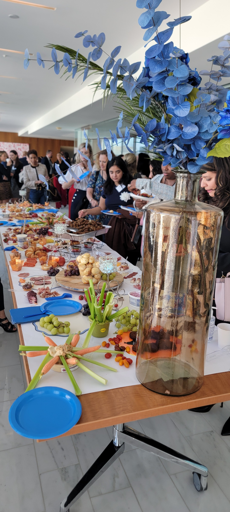

We had the privilege of attending From Passion to Profits: Inspiring Entrepreneurial Success, an event hosted by PNC Bank that brought together a remarkable group of women entrepreneurs for an afternoon of honest conversation, connection, and inspiration. The energy in the room was electric from the moment we walked in, and the panel that followed delivered exactly what the title promised.
Four founders took the stage and did something that doesn't happen often enough in business circles: they got real. They talked about where their businesses started, the walls they ran into along the way, and what it actually took to push through. As a firm that works closely with small business owners every day, we left with a deep appreciation for every one of their journeys and a few lessons worth sharing.

Panelist 1Jessica Aiello
Founder & CEO, TCS Interpreting
Jessica built TCS Interpreting into a company that removes one of the most fundamental barriers in human communication: language. Her work connects people across linguistic divides in some of the most high-stakes settings imaginable, including healthcare, legal proceedings, education, and beyond. What struck us most about her story was how deeply mission-driven the business is from its foundation. For Jessica, interpretation isn't just a service. It's access. It's the difference between someone understanding what's happening to them and being left in the dark.
Building a service business rooted in that kind of purpose requires both heart and structure. Hearing her speak about how she's scaled TCS Interpreting while holding onto that mission reminded us that the most durable businesses are the ones built around something that genuinely matters.
Panelist 2Stephanie Chon
Founder & CEO, Balian Springs
Stephanie's journey with Balian Springs is a testament to what it takes to bring a physical product to market. The consumer packaged goods space is brutally competitive. Shelf space is hard to win, distribution is expensive, and the road from concept to retail is filled with setbacks that would stop most people cold. Stephanie talked about navigating those challenges with persistence and the willingness to keep adapting without losing sight of what made Balian Springs worth fighting for in the first place.
Her story resonated with us because so many of our clients in product-based businesses face exactly that tension between the push to grow faster and the need to build sustainably. Stephanie is doing both.
Panelist 3Beth Johnson
Founder & CEO, RP3
Beth has built RP3 into one of the most respected independent agencies in the DC region, a creative firm known for the quality of its work and the depth of its client relationships. What she shared about building a business in a competitive, relationship-driven industry was candid and refreshing. She talked about the moments that tested her resolve: the pitches that didn't go her way, the pivots that were necessary even when they were painful, and the importance of staying true to what you stand for even when it would have been easier to compromise.
One theme that ran through every panelist's story: adversity wasn't the exception. It was the rule. What separated them wasn't the absence of hard times. It was the decision, made over and over again, to keep going anyway.
For anyone running a service-based business, Beth's perspective on building trust and reputation over time was worth the price of admission alone.
Panelist 4Hannah Pollack
Founder & CEO, Nightingale Ice Cream
Hannah brought a warmth and genuineness to the stage that was immediately disarming. Nightingale Ice Cream isn't just a dessert brand. It is a labor of love built from a deep passion for craft, quality, and the experience of bringing joy to people through food. Food businesses are notoriously difficult, with thin margins, complex logistics, and a relentless pressure to produce consistently at scale. Hannah talked about what it took to build something special in that environment without cutting corners on what makes it special.
Her story is a reminder that passion alone doesn't make a business, but without it, the hard days don't have a reason. The businesses that last are the ones where the founder's "why" is strong enough to outlast the inevitable rough patches.
What We Took Away
Events like this are why community matters in business. Four founders, four very different industries, four unique paths, but the same core story underneath all of them: a clear sense of purpose, the resilience to absorb setbacks, and the discipline to keep building even when no one is watching.
At Dexton-Livvy, we work with small business owners every day who are writing versions of these same stories. The financial side of running a business, including the bookkeeping, the cleanup, and the month-end close, can feel like the least inspiring part of entrepreneurship. But it's the foundation that everything else stands on. Clean books give you the clarity to make the moves that matter. They free you to focus on the passion that started it all.
Thank you to PNC Bank for putting together an afternoon that reminded us why the work we all do is worth doing. And thank you to Jessica, Stephanie, Beth, and Hannah for sharing your stories so generously. You inspired the room and you inspired us.